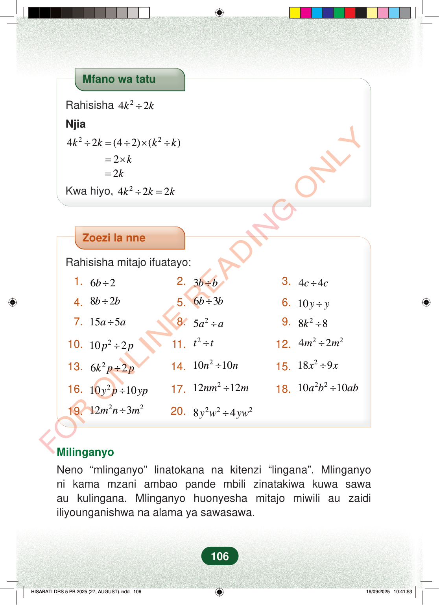

Mfano wa tatuRahisisha242kk÷Njia2242(42)()kkkk÷=÷×÷2k=×2k=Kwa hiyo,2422kkk÷=Zoezi la nneRahisisha mitajo ifuatayo:1.62b÷2.3bb÷3.44cc÷4.82bb÷5.63bb÷6.10yy÷7.155aa÷8.25aa÷9.288k÷10.2102pp÷11.2tt÷12.2242mm÷13.262kpp÷14.21010nn÷15.2189xx÷16.21010ypyp÷17.21212nmm÷18.221010abab÷19.22123mnm÷20.22284ywyw÷MilinganyoNeno “mlinganyo” linatokana na kitenzi “lingana”. Mlinganyoni kama mzani ambao pande mbili zinatakiwa kuwa sawaau kulingana. Mlinganyo huonyesha mitajo miwili au zaidiiliyounganishwa na alama ya sawasawa.106
Mfano wa tatu
Rahisisha 2 4 2 k k ÷
Njia
2 2 4 2 (4 2) ( ) k k k k ÷ = ÷ × ÷
2 k = × 2 k =
Kwa hiyo, 2 4 2 2 k k k ÷ =
Zoezi la nne
Rahisisha mitajo ifuatayo:
1. 6 2 b ÷ 2. 3 b b ÷ 3. 4 4 c c ÷
4. 8 2 b b ÷ 5. 6 3 b b ÷ 6. 10 y y ÷
7. 15 5 a a ÷ 8. 2 5 a a ÷ 9. 2 8 8 k ÷
10. 2 10 2 p p ÷ 11. 2 t t ÷ 12. 2 2 4 2 m m ÷
13. 2 6 2 k p p ÷ 14. 2 10 10 n n ÷ 15. 2 18 9 x x ÷
16. 2 10 10 y p yp ÷ 17. 2 12 12 nm m ÷ 18. 2 2 10 10 a b ab ÷
19. 2 2 12 3 m n m ÷ 20. 2 2 2 8 4 y w yw ÷
Milinganyo
Neno “mlinganyo” linatokana na kitenzi “lingana”. Mlinganyo ni kama mzani ambao pande mbili zinatakiwa kuwa sawa au kulingana. Mlinganyo huonyesha mitajo miwili au zaidi iliyounganishwa na alama ya sawasawa.
106
Zoezi la nneRahisisha mitajo ifuatayo:1. <math><mrow><mn>6</mn><mi>b</mi><mo>÷</mo><mn>2</mn></mrow></math>2. <math><mrow><mn>3</mn><mi>b</mi><mo>÷</mo><mi>b</mi></mrow></math>3. <math><mrow><mn>4</mn><mi>c</mi><mo>÷</mo><mn>4</mn><mi>c</mi></mrow></math>4. <math><mrow><mn>8</mn><mi>b</mi><mo>÷</mo><mn>2</mn><mi>b</mi></mrow></math>5. <math><mrow><mn>6</mn><mi>b</mi><mo>÷</mo><mn>3</mn><mi>b</mi></mrow></math>6. <math><mrow><mn>10</mn><mi>y</mi><mo>÷</mo><mi>y</mi></mrow></math>7. <math><mrow><mn>15</mn><mi>a</mi><mo>÷</mo><mn>5</mn><mi>a</mi></mrow></math>8. <math><mrow><mn>5</mn><msup><mi>a</mi><mn>2</mn></msup><mo>÷</mo><mi>a</mi></mrow></math>9. <math><mrow><mn>8</mn><msup><mi>k</mi><mn>2</mn></msup><mo>÷</mo><mn>8</mn></mrow></math>10. <math><mrow><mn>10</mn><msup><mi>p</mi><mn class="tml-med-pad">2</mn></msup><mo>÷</mo><mn>2</mn><mi>p</mi></mrow></math>11. <math><mrow><msup><mi>t</mi><mn class="tml-med-pad">2</mn></msup><mo>÷</mo><mi>t</mi></mrow></math>12. <math><mrow><mn>4</mn><msup><mi>m</mi><mn>2</mn></msup><mo>÷</mo><mn>2</mn><msup><mi>m</mi><mn>2</mn></msup></mrow></math>13. <math><mrow><mn>6</mn><msup><mi>k</mi><mn>2</mn></msup><mi>p</mi><mo>÷</mo><mn>2</mn><mi>p</mi></mrow></math>14. <math><mrow><mn>10</mn><msup><mi>n</mi><mn>2</mn></msup><mo>÷</mo><mn>10</mn><mi>n</mi></mrow></math>15. <math><mrow><mn>18</mn><msup><mi>x</mi><mn class="tml-sml-pad">2</mn></msup><mo>÷</mo><mn>9</mn><mi>x</mi></mrow></math>16. <math><mrow><mn>10</mn><msup><mi>y</mi><mn class="tml-sml-pad">2</mn></msup><mi>p</mi><mo>÷</mo><mn>10</mn><mi>y</mi><mi>p</mi></mrow></math>17. <math><mrow><mn>12</mn><mi>n</mi><msup><mi>m</mi><mn>2</mn></msup><mo>÷</mo><mn>12</mn><mi>m</mi></mrow></math>18. <math><mrow><mn>10</mn><msup><mi>a</mi><mn>2</mn></msup><msup><mi>b</mi><mn>2</mn></msup><mo>÷</mo><mn>10</mn><mi>a</mi><mi>b</mi></mrow></math>19. <math><mrow><mn>12</mn><msup><mi>m</mi><mn>2</mn></msup><mi>n</mi><mo>÷</mo><mn>3</mn><msup><mi>m</mi><mn>2</mn></msup></mrow></math>20. <math><mrow><mn>8</mn><msup><mi>y</mi><mn class="tml-sml-pad">2</mn></msup><msup><mi>w</mi><mn class="tml-med-pad">2</mn></msup><mo>÷</mo><mn>4</mn><mi>y</mi><msup><mi>w</mi><mn class="tml-med-pad">2</mn></msup></mrow></math>MilinganyoNeno “mlinganyo” linatokana na kitenzi “lingana”.Mlinganyo ni kama mzani ambao pande mbili zinatakiwa kuwa sawa au kulingana.Mlinganyo huonyesha mitajo miwili au zaidi iliyounganishwa na alama ya sawasawa.